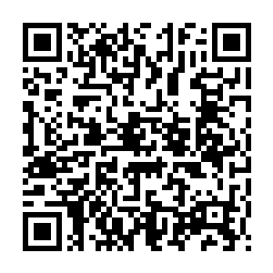

📷 Juega la misión en tu teléfonoUn sensor es la parte del robot que PERCIBE. Capta algo del mundo real —luz, distancia, calor, contacto, sonido o humedad— y lo convierte en una señal que el controlador entiende. Sin sensores, el robot estaría «ciego y sordo».
✅ En tu cuerpo es igual: receptor → cerebro → efector. 🫀
Cuando alguien te habla, tu oído capta el sonido (receptor), tu cerebro decide responder y tus músculos mueven la boca (efector). El robot hace exactamente lo mismo:
| En tu cuerpo | En el robot | ¿Qué hace? |
|---|---|---|
| 👁️ El ojo | Sensor de luz (fotorresistencia) | PERCIBE si hay claridad u oscuridad |
| 👂 El oído | Sensor de sonido (micrófono) | PERCIBE ruidos, voces y aplausos |
| 🖐️ La piel | Sensor de tacto y de temperatura | PERCIBE el contacto, el calor y el frío |
| 🧠 El cerebro | Controlador | DECIDE qué hacer con la información recibida |
| 💪 El músculo | Actuador (motor, rueda, bocina) | ACTÚA: ejecuta la orden del controlador |
Es el error más común de todos. La diferencia es sencilla: uno mete información y el otro saca acción.
| 📡 SENSOR (entrada) | 💪 ACTUADOR (salida) |
|---|---|
| PERCIBE y avisa: «hay un obstáculo a 20 cm» | ACTÚA y ejecuta: gira, empuja, alumbra, suena |
| No mueve nada | No mide nada |
| Se parece a los sentidos 👁️👂🖐️ | Se parece a los músculos 💪 |
| Ejemplos: fotorresistencia, ultrasónico, pulsador, termómetro, micrófono | Ejemplos: motor, rueda, brazo, bocina, luz LED, válvula |
| Sensor | ¿Qué percibe? | Sentido humano | Ejemplo |
|---|---|---|---|
| ☀️ De luz | Cuánta luz hay: claro u oscuro | 👁️ La vista | Carrito sigue-líneas; lámpara del corredor |
| 📏 De distancia | Qué tan lejos está un objeto (con el eco) | 🦇 El eco del murciélago | Robot que esquiva obstáculos; puerta automática |
| 🤲 De tacto | Si algo lo toca o lo presiona | 🖐️ El tacto de la piel | Pulsador de choque; botón de encendido |
| 🌡️ De temperatura | Cuánto calor o frío hay | 🖐️ La piel | Termómetro digital del centro de salud |
| 🔊 De sonido | Ruidos, voces y aplausos | 👂 El oído | Micrófono del celular; robot que arranca al aplaudir |
| 💧 De humedad | Cuánta agua hay en la tierra o el aire | 🖐️ El tacto (tierra mojada) | Riego del cafetal y de la huerta escolar |
| ¿Dónde? | ¿Qué sensor trabaja ahí? | ¿Qué percibe? |
|---|---|---|
| 🏪 Supermercado | Sensor de distancia o movimiento | Detecta a la persona y la puerta se abre sola |
| 🏠 Pasillo de la casa | Sensor de luz | Nota que oscureció y la lámpara se enciende sola |
| 📱 Celular | Sensor de proximidad | Nota que el teléfono está junto a la oreja y apaga la pantalla |
| ☕ Cafetal | Sensor de humedad | Mide el agua de la tierra y avisa cuándo regar |
| 🏥 Centro de salud | Sensor de temperatura | El termómetro digital mide la fiebre en segundos |
| Columna A | Columna B |
|---|---|
| 1. ____ Sensor | A. Micrófono: capta ruidos, voces y aplausos |
| 2. ____ Sensor de luz | B. Pulsador que avisa cuando algo lo presiona |
| 3. ____ Sensor de distancia | C. Recibe la señal del sensor y decide qué hacer |
| 4. ____ Sensor de tacto | D. Mide el agua de la tierra: avisa cuándo regar |
| 5. ____ Sensor de temperatura | E. Percibe el mundo y lo convierte en una señal |
| 6. ____ Sensor de sonido | F. Ejecuta la acción: motor, rueda, bocina o luz |
| 7. ____ Sensor de humedad | G. Distingue claro y oscuro: sirve al sigue-líneas |
| 8. ____ Actuador | H. Dato eléctrico que viaja del sensor al controlador |
| 9. ____ Controlador | I. Mide el calor: el termómetro del centro de salud |
| 10. ____ Señal | J. Mide con el eco qué tan lejos está un objeto |
| Actividad | Lugar | Valor | Nota obtenida | Observación |
|---|---|---|---|---|
| Copió los contenidos de este material en su cuaderno de Robótica. | Tarea en el hogar | 100 | ||
| Resolvió la sección «Ponte a Prueba» directamente en esta ficha. | Tarea en el aula, un día antes del examen | 100 | ||
| Realizó las actividades desconectadas y dibujó el robot de su comunidad con sus sensores. | Tarea en el hogar | 100 | ||
| Prueba impresa realizada en el aula. | Evaluación en el aula | 100 | ||
| Promedio nota final → | % | |||
Recuerde que ya aprendió a sacar el promedio: sume el total del valor obtenido y divídalo entre cuatro. El resultado será su nota final. Perderá puntos si no completa el trabajo, si su letra no es legible o si escribe con faltas de ortografía.
Esta hoja se imprime suelta: es solo para el docente o para la autoevaluación guiada.